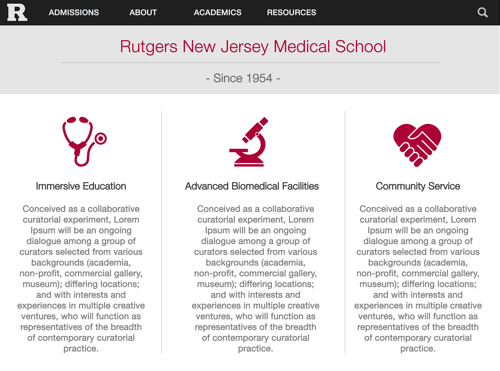

Rutgers University Medical School
Website Redesign
This is design a recreation of the current Rutgers University Medical School website. The only purpose for its creation was for practice designing website layouts.
To view their current site, click here.

